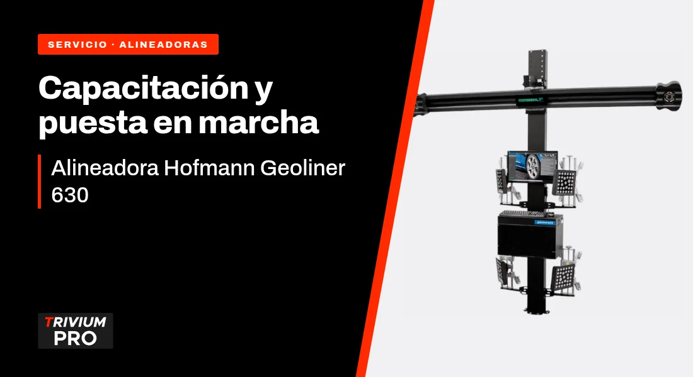

Ubicación: Neumáticos Rodavial – Michelin
Cliente: Neumáticos Rodavial
Producto instalado: Alineadora Hofmann Geoliner 630
Fecha: Abril 2025
En esta ocasión realizamos la capacitación y puesta en marcha de la alineadora Hofmann Geoliner 630 en Neumáticos Rodavial, una gomería oficial de la red Michelin.


La formación estuvo a cargo de ingenieros certificados de Hofmann, quienes transmitieron a los técnicos de Rodavial todas las mejores prácticas para el uso correcto del equipo, garantizando precisión y eficiencia en los servicios de alineación.